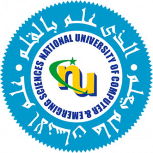

FAST Insider
National University of Computer and Emerging Sciences
History
The National University of Computer & Emerging Sciences has the honor of being the first multi-campus private sector university set up under the Federal Charter granted by Ordinance No.XXIII of 2000, dated July 01, 2000.The University started with an impressive advantage in that, thanks to the selfless, ceaseless and imaginative efforts of the Foundation FAST, it inherited four first rate computer science institutes located at Karachi, Lahore, Islamabad and Peshawar, in spacious buildings and prestigious settings.
These institutes, individually as well as collectively, have established leadership position due to the splendid vision of an enlightened management and tireless efforts of a highly qualified faculty. Over the years FAST has become the hallmark of excellence in academic arena, domestic market and international community.
Mission Statement
In line with the thrust of our faith and glory of our heritage, we shall try our best to play an effective and meaningful role in creating a knowledge based society in Pakistan. This avenue would naturally and seamlessly lead to a civil society with knowledge driven economy. In furtherance of these general objectives, we shall focus upon acquisition and propagation of cutting edge science and technologies. Recognizing the fact that Information Technology is having a profound impact upon almost every aspect of human activity and changing the shape of our future. We shall retain our focus, for the time being, on producing graduates in Computer Science, Engineering, Business Management and Basic Sciences as well as managers of the highest order who may act as vanguard of the IT Revolution in Pakistan.We believe that enormous educational potential of computer science, if used wisely, widely and vigorously, can be a powerful vehicle of social equalization.
In line with its philosophy, satisfaction of the financial needs of the poor, and opening doors of opportunities of highly expensive education to the indigent and disempowered, are the greatest moral achievements of the Foundation.
In pursuit of this noble objectives, the University shall faithfully, vigorously and dedicatedly follow that policy to fulfill the requirements of equality of opportunity and social justice.
Realizing that the success of IT revolution requires concerted efforts of many, not a few, we shall establish a formal network of cooperative and collaborative relationship with centers of excellence within and outside Pakistan. The quality of human beings shall remain center of our focus. It shall be our constant endeavor to produce, not only excellent scientists and good technicians, but also well balanced human beings with strong sense of values.